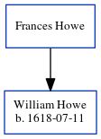

Frances Howe
[ Home ] | [ Calendar ] | [ Surnames Index ] | [ Census Index ] | [ Family History ]Frances Howe was born in Houghton Regis, Bedfordshire, England1. He had 1 child, William.
Children
- William was born on 1618-07-11
Citations
- OneWorldTree Online publication - Provo, UT, USA: MyFamily.com, Inc.
Family Tree
Generated by ged2site. Last updated on Jun 6, 2024